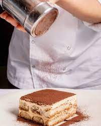

Tiramisu
Malzemeler
- Mascarpone 500 gr
- Krema 200 gr
- Şeker 120 gr
- Yumurta 6 sarı, 3 beyaz
Yapılışı
- Şekerle yumurta sarısını benvari şeklinde eritip çırp.
- Kremayı çırp.
- Yumurta beyazını çırp.
- Mascarpone peynirini yavaşça elinle karıştırarak aç.
- Dikkat et peynir kesilmesin!
- Hepsini yavaşça tahta kaşıkla karıştır.
- 3 shot espresso ile 1 kapak amaretto'yu karıştır.
- kedi dillerini karışım ile ıslat.
- kedi dili, tiramisu harcı, olacak şekilde 3 kat yap.
Keyfini çıkar.
